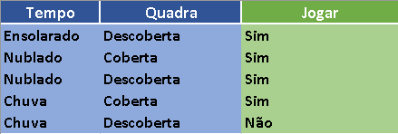

Utilizando o Weka
Abrindo e visualizando arquivos Arff:
1º:
Para vizualizar os dados do arquivo Arff (Attribute-Relation File Format) escolhemos a opção de explorer.

2º:
Ao clicar em Explorer, a página principal do Weka será aberta.

3º:
Na aba de opções, selecione a opção "Open File" e procure pelo arquivo Arff.

4º:
Ao escolher o arquivo desejado, os dados serão mostrados junto com um gráfico.

Criando um Arquivo Arff:
Agora que você entendeu como funciona a interface do Weka, e como abrir visualizar os dados do arquivo, vamos criar seu primeiro arquivo Arff, para isso é necessário um editor de texto puro, e não se preocupe, seu computador já tem um, o bloco de notas padrão, então não será necessário baixar nenhum outro programa para isso. Logo abaixo temos a relação vista anteriormente.

Agora iremos passar essa relação para Arff. Abra seu bloco de notas e utilize os seguintes comandos:

@relation:
Esse comando é responsável por criar uma relação com o nome desejado.
@attribute:
Cria um atributo com um nome especifico e com as possibilidades de valores que pode ser preenchido, como por exemplo no atributo “Tempo”, pode ser usado os valores “Ensolarado”, “Nublado” ou “Chuva”.
@data:
Aqui é onde nós inserimos os valores na relação, como por exemplo na primeira linha: “Ensolarado, Descoberta, Sim”, aqui nós estamos dizendo que o primeiro valor está com um tempo ensolarado, possuí uma quadra descoberta e que pode acontecer o jogo de futebol, preste bem atenção ao digitar os dados, seguindo a ordem de atributos e não adicionando valores a mais. Após isso, você vai em “Salvar como” e digite o nome desejado e logo em seguida .arff, e está pronto para ser utilizado seu arquivo arff.